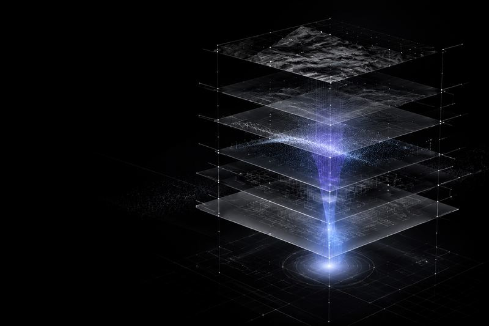
让 AI 视觉探索变得可控
Controllable Visual Exploration
Projects AI Workflows Vibe Coding
以真实项目为基础，沉淀 AI 设计工作流，另用 Vibe Coding 把想法实现为可运行的产品实验。
Linpo Wu
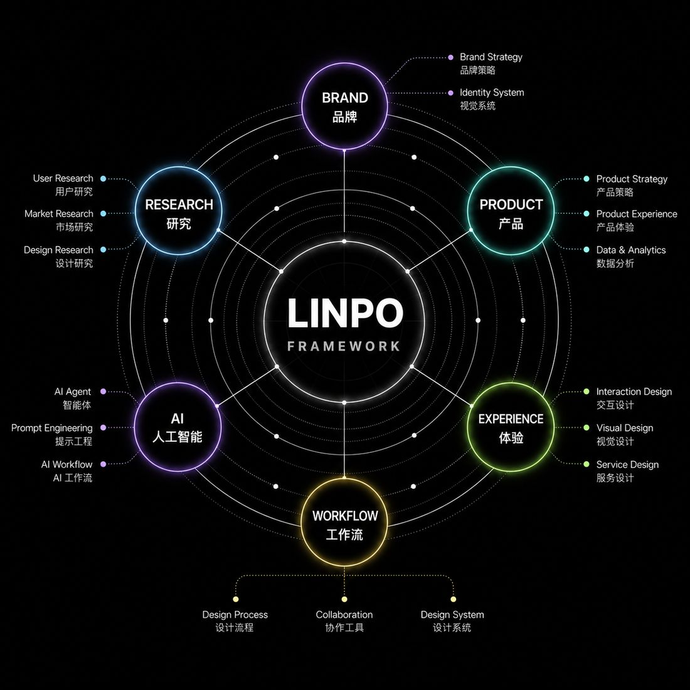
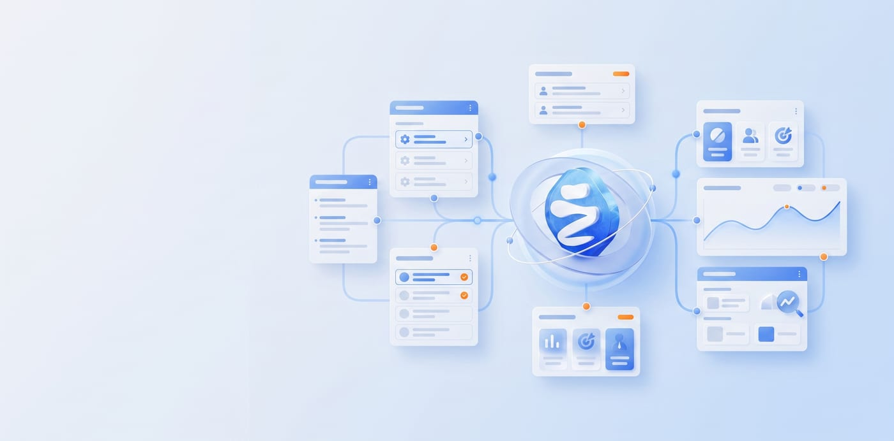
Omni-channel Marketing
Platform Experience Upgrade
复杂业务场景 / 数据可视化 / 系统效率
Xiaohui AI Product
Visual & Interface Design
AI 产品体验 / 视觉系统 / 品牌表达
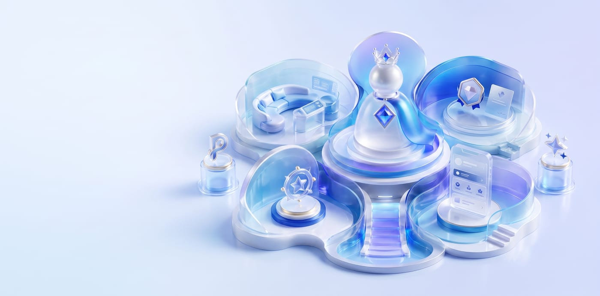
Member Points System
Experience Optimization
系统框架 / 会员服务 / 互动体验
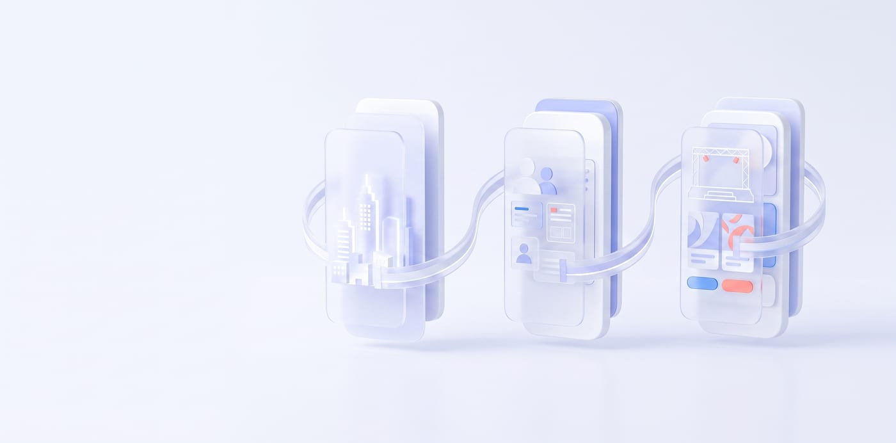
Brand Communication
H5 Archive
地产传播 / 招聘互动 / 品牌活动
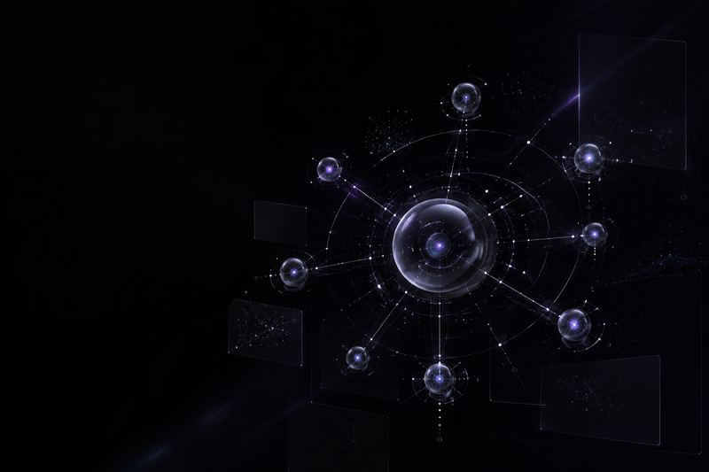
五步拆解模糊需求，形成可验证的设计方案

Controllable Visual Exploration
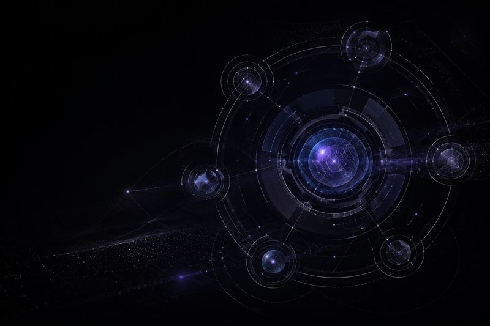
Designing AI for Business
Design to Code with AI
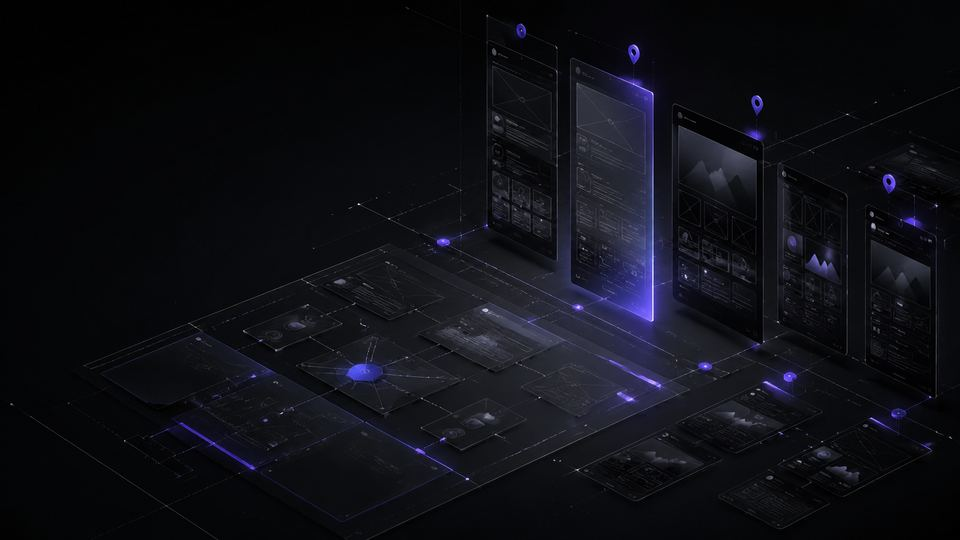
Detail Page Planning Workspace
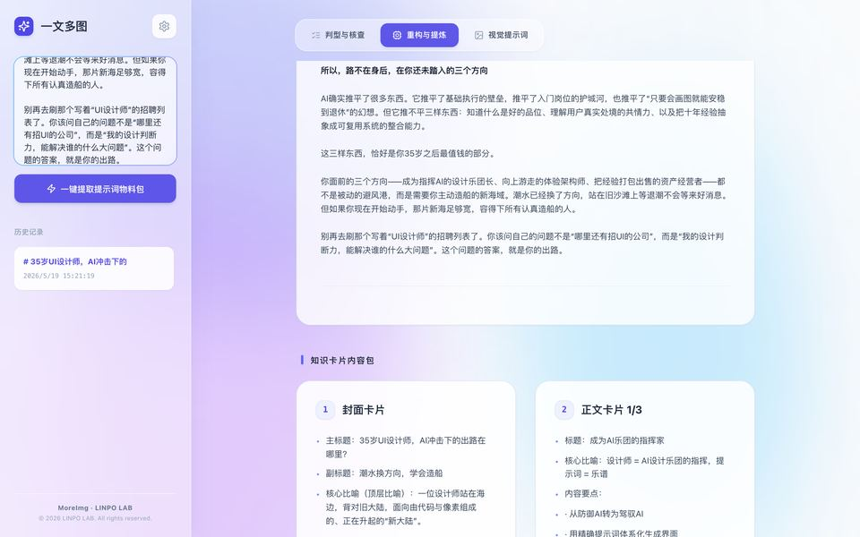
把长文重构为知识卡片内容与一一对应的视觉提示词
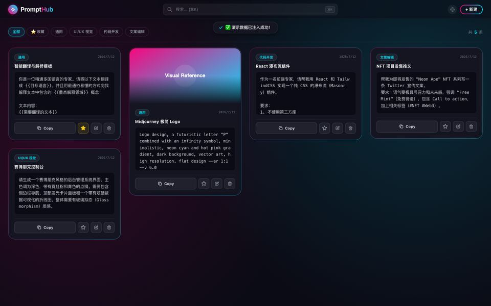
把建库、检索、动态填充、复用与备份连成本地优先的个人工作流
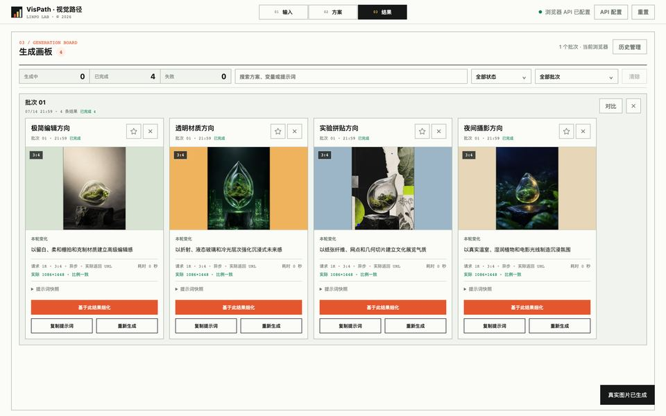
固定创作约束，只改变一个视觉维度，生成并比较可继续细化的多套方向
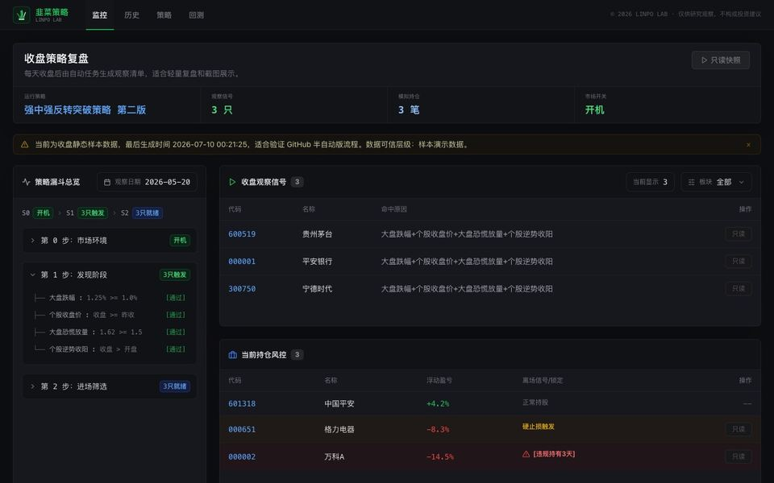
验证收盘扫描、候选信号与模拟回看的复盘路径
从市场环境到个股依据的每日可解释观察路径
工作地点 西安，中国
联系合作 hello@linpolab.com